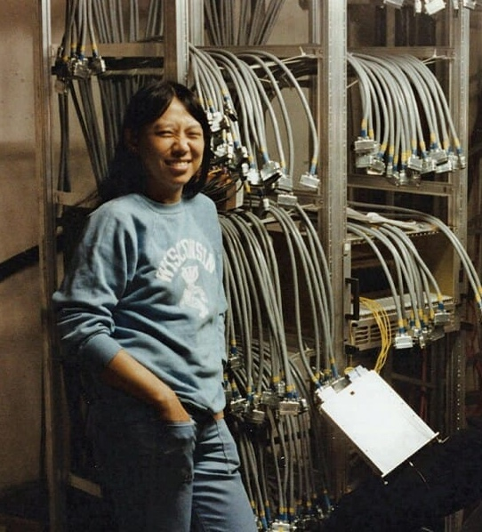

Sau Lan Wu
Breakthrough particle physicist

- Inspired to study physics after reading a biography of Marie Curie
- Moved from Hong Kong to New York to attend Vassar College on scholarship
- Learned english (in part) by very slowly reading The Scarlet Letter, frequently referencing a dictionary
- Hugely accomplished in particle physics, worked on discovering the charmed quark (J/psi particle), the gluon, and the Higgs boson particle
- Experienced racial discrimination while visiting the Supreme Court and confronted with choosing between "black" and "white" restrooms
- Invited to the White House to meet Jackie Kennedy while in college
- Has mentored at least 65 PhD students